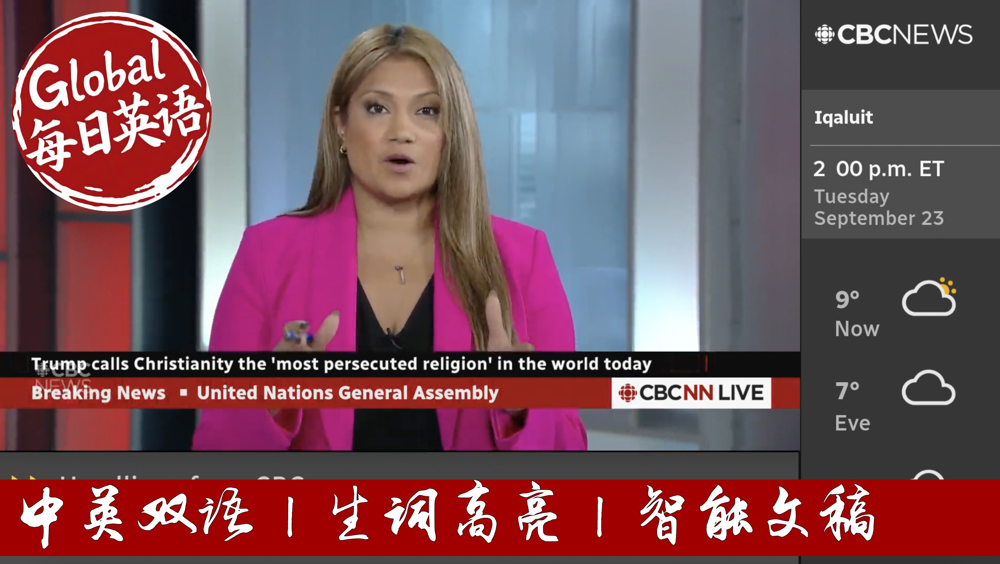

【CBC News 20250924 特朗普联大演讲：批多国认巴勒斯坦、斥欧洲购俄油、谴责多国承认巴勒斯坦国】
Summary: In his first UN address since 2020, President Trump spoke for nearly an hour, far exceeding the typical 15-minute limit. He criticized member nations and the UN itself, accusing the organization of funding uncontrolled migration. On the Middle East, he condemned countries recognizing Palestinian statehood, calling it a reward for Hamas, and emphasized a ceasefire and hostage release. Regarding Ukraine, he criticized European nations for purchasing Russian oil, which he said funds the war. He also spent significant time stressing national security and border control, asserting his effectiveness in these areas.
摘要： 特朗普在2020年后的首次联合国演讲中发言近一小时，远超常规时限。他批评成员国及联合国本身，指责其资助不受控的移民。在中东问题上，他谴责多国承认巴勒斯坦国，称此举是奖励哈马斯，并强调需立即停火及释放人质。在乌克兰问题上，他批评欧洲国家购买俄罗斯石油，变相资助战争。他还花大量时间强调国家安全与边境管控，自称擅长此道。

⏱️ Estimated Reading Time: 28 min.
📚 四级生词 📚 六级生词 📚 雅思生词 📚 托福生词 📚 专八生词 📚 SAT生词 📚 考研生词 📚 GRE生词
I'm sorry, but I'm sorry.
It was President Donald Trump.
This was his first U.N. General Assembly address since 2020,
as is often the case with his addresses in this setting,
it was extremely unconventional.
Typically, leaders are meant to speak for a voluntary time limit of about 15 minutes.
He spoke for about 56 minutes on a wide range of topics.
He was critical of member nations and the UN itself.
After calling America, the hottest country in the world and echoing sentiments from his inaugural address that America's entering pardon me, it's golden age now under his leadership.
Trump urged countries to crack down on illegal immigration and accuse the UN of funding uncontrolled migration.
He announced that the US will lead international efforts to enforce a biological weapons convention to prevent any proliferation.
He also went on to say that he was critical of the historic recognition of many nations, including Canada, over the past few days of recognizing Palestinian statehood.
He called it giving into Hamas.
He said allies looking to end the conflict in the Middle East should only unite around a message to free all the hostages.
And he says a ceasefire is needed immediately.
On Russia's war on Ukraine, Trump called out first to Russia and China and Indian China for what he called funding the war by purchasing Russian oil.
And then he urged European leaders to stop buying oil from Russia as well saying perhaps he would only take additional pressuring moves.
For example, sanctions if in fact European nations stop buying oil from Russia saying that they are funding the war against their own borders.
He spent a lot of time emphasizing national security and border security.
He said that he's really good at this.
And in his quote, he says your countries are going to hell.
He also touched on tariffs calling them a defense mechanism.
Okay, so a lot to cover there.
The CBC's Evan Dyer was listening in.
He joins me in a live from the United Nations.
There was so much to talk about, but I do want to focus in, of course, the historic nature of this 80th session.
And that is the formal recognition of statehood for Palestine by so many nations and also the conflict in Ukraine right now involving Russia.
And what the U.S. President had to say about that.
Well, of course, we knew that the United States was likely to condemn in President Trump's speech the recognition of Palestine because that has been its message consistently since the first announcements a couple of months ago that some more European countries would recognize Palestine.
It responded the same way in 2024 when countries like Spain, Ireland and Norway recognized Palestine.
You know, yesterday we had, of course, the high-level summit, which was attended by Prime Minister Karinny, presided over by Francis Emmanuel Macron, but also co-hosted by Saudi Arabia and the United States and Israel both refused to attend that session.
They've taken the view that it won't stop the war.
That's one thing that they say.
They also have said that it's a reward for Hamas.
Israel has also gone further now, of course, with Israel, saying that it will never allow a Palestinian state west of the Jordan River.
So essentially saying that the peace process is over and there won't be a two-state solution.
And so the U.S. and Israel remain very closely aligned on that issue.
On the Ukraine, perhaps his comments might have been a little bit more surprising in the sense that he did criticize, and in a way almost mock Russia a little bit there,
he talked about how the Russians expected everything to be over in the space of three days.
And here we are, you know, now almost three years later, and of course, or in fact it is three years later, and the war continues.
So he said he had expected an early end because of his personal relationship with Vladimir Putin.
He thought it would be the easiest of all the wars that he says that he solves and brought peace to.
And it has not turned out that way.
He also criticized European allies for continuing to buy oil and natural gas from Russia and to put some pressure on them to back up their more sort of determined position against Russia with actions that would cut off the flow of funds that Russia uses to buy arms.
So on those two issues, he was really restating, you know, conventional U.S. policy on those under the Trump administration that we've heard before.
Thanks for this, Evan.
That is the CBC's Evan Dyer from outside the UN in New York.
U.S. President Donald Trump was harshly critical in his address of the growing list of countries that are supporting Palestinian statehood.
He says that support represents a reward for Hamas.
CBC's senior correspondent Sasha Petrusik is in Jerusalem watching that part of the story for us and taking in reaction.
How are Trump's comments being received where you are?
Well, Arthi, they're not being received at the moment.
It's hard to tell because it's New Year's Day here and people have only now, if they were paying attention, gotten that information.
But in general, I think that most of the people who are in charge of Israel right now would probably be pretty pleased to hear what they did from Trump.
He was quite encouraging.
And if anything, this is probably going to embolden this government.
The words he used in terms of criticizing countries, chastising countries for recognizing a Palestinian state are very much the phrases, in fact, that the Israeli government has used, that you are rewarding Hamas, that this is basically Hamas asking for a ransom and you have paid for it.
These are exactly the kind of phrases that we have heard from the Israeli government.
What he didn't address at all was any of the concerns in that room, in the General Assembly of the United Nations, over what Israel is doing in Gaza, over the problems with aid delivery, which is something that Trump himself has said that he was going to fix, and didn't mention that at all, and didn't mention anything about the sort of veiled suggestions by Israel that it was going to be annexing more and more of the occupied West Bank.
So those things, if that's his position that he's going to take into meetings with Israeli Prime Minister Benjamin Netanyahu later this week and next week, then that is really going to leave Israel with the impression that the United States is not going to stand in the way of Israel doing pretty much whatever it wants to do, which is sort of what it's been doing for quite some time.
And especially when it comes to the occupied West Bank, where there's a lot of voices here that are pushing for annexation and annexation in different forms, expanding settlements, reclassifying certain parts of the territory, so that Israel has more military control, it may not be annexation in those terms, but it is going to be something that gives Israel more control over the occupied West Bank.
And a lot of the people who are the hard-wright coalition members of Netanyahu have been seeing Trump as an ally, and I'm not sure that anything in the speech today, any of the signals that he sent out, will change their mind.
So this is probably as close as they could have hoped for for some kind of a green light.
Again, if that is what he says in private to Netanyahu, if that's the impression that Netanyahu comes back to Israel with when he said he will announce what Israel's next step is going to be in retaliation for all these countries recognizing Palestinian state, and then Israel pretty much looks like it probably is free to do whatever it wants to do.
To then and what is the latest when we're discussing what's happening on the ground in Gaza?
Well in Gaza, the operation to take Gaza City has continued.
We're hearing from people inside the city that tanks and troops are moving closer and closer to the center of Gaza, and that operation is in fact if anything ramping up.
Israel has suffered its first military loss in Gaza and first soldier to be killed in this operation, and that compares to Palestinians, some 38 at least to have been killed in the last 24 hours or more.
So this has been a big issue.
It's been a big crisis.
The situation, the humanitarian situation in Gaza City is getting worse.
We've been told and aid groups are saying in the south it's getting worse too, as hundreds of thousands of people have left the city.
Perhaps as many as 600,000 based on Israeli numbers, but that still leaves more than 300,000 probably in the Gaza City area, and they are suffering not only because of the military operation, but because of the lack of aid.
Thanks for the Sasha.
That is the CBC senior correspondent Sasha Petrusik in Jerusalem.
Jimmy Kimmel live is back on the air tonight less than a week after ABC suspended the late night talk show.
That suspension generated a major public backlash against the network and its parent company, Disney.
I haven't seen a poll yet, but I think if you ask Americans if the president should be dictating what TV hosts can and can't say, you get about 3% positive and 97% negative.
Now ABC pulled Kimmel off the air after comments he made about the murder of US far-right activists Charlie Kirk.
The suspension set off a national discussion about freedom of speech, and today we're learning Kimmel's show will not be airing on dozens of ABC affiliate stations.
Steve Fetterman brings us the latest developments from Los Angeles.
Now shortly before Disney and ABC announced that Kimmel was coming back around 400 entertainment figures released a letter that they signed attacking ABC and Disney for removing Kimmel last week among those signing the document, the letter Robert De Niro, Martin Short and Neral Streep.
Now although Jimmy Kimmel will be back on ABC tonight, a significant number of ABC affiliates are not going to air the show.
There are two major broadcast groups, one of them called Next Star, the other called Sinclair.
They control maybe around 20% of the ABC affiliates, more than 60 ABC affiliates, and they say they're not going to put Kimmel back.
This is a statement yesterday from the Sinclair broadcast group, basically saying that they will replace Kimmel with an extended late night newscast.
They do say though that talks with ABC are ongoing, so it seems like they may just want to wait a day or two to see how it goes and then maybe make another decision.
Meanwhile we do expect some comments from Jimmy Kimmel tonight.
He wants to have these stations air his show at the same time.
It does not watch a link which is comic independence if you will.
So I think we're going to hear some comments from him that will be conciliatory, express understanding why some people may have been upset, but also talk about that he is a comedian and jokes are part of the profession.
So a very, very night balancing act, I think Jimmy Kimmel will be going through tonight.
Again, he wants to be back.
He wants to have all these stations air his show at the same time.
He does not want to change his style which has been so successful throughout the years.
Steve Futterman, CBC News, outside the El Capitán Theater in Hollywood.
In the UK, the Duchess of York, Sarah Ferguson is no longer a patron of several charities.
They've severed ties with her because of an email she reportedly wrote in 2011 to convicted child sex offender Jeffrey Epstein.
The CBC's Christchurchumancing is tracking this story for us from our London bureau.
The Duchess of York, Sarah Ferguson is the latest British figure to be swept into the toxic vortex of the late sex offender Jeffrey Epstein.
Times from 2011 sent by the Duchess to Epstein were obtained by the paper The Mail on Sunday.
Now CBC has not seen the email firsthand, but the BBC and other British media report Ferguson called Epstein a supreme friend and offered a humble apology saying reports of her calling Epstein a pita file were inaccurate.
As her words became public, charities started cutting ties with the Duchess.
Julia's house, a children's hospice charity, was the first saying it would be inappropriate for her to continue as a patron.
One of the latest the British Heart Foundation, which released a statement saying we are grateful for the Duchess's support for our work and thank her for her past efforts to help us save and improve the lives by funding pioneering research into cardiovascular disease.
Andrew Loney is a royal biographer who spent years researching and writing a book on the Duchess, her ex-husband, Prince Andrew and their links to Epstein.
What's so damaging about this email is that it actually highlights the cynicism which she's approached this.
What she says in public isn't actually what she feels in private and it's a very cynical attempt to keep Epstein on side and as I say she remains friendly with him for many years after this, what at the same time appearing to publicly distance herself from him.
Ferguson's books and her charity projects kept her in the public eye and she still attends royal family events, although she is not a working royal.
A spokesperson for Ferguson said her communication was an attempt to diffuse threats of a defamation lawsuit by Epstein.
This latest Epstein linked scandal comes a week after the UK's ambassador to the US, Peter Mendelssohn was dismissed after some of his emails to Epstein were made public.
Crystal Gamancing, CBC News, London.
CBC News has learned Marine Land is looking to move its remaining 30 Balugo whales out of Canada.
The aquarium and amusement park in Niagara Falls, Ontario has faced criticism for years over animal welfare.
Lady Nicholson has this exclusive story.
Marine Land Canada may not have opened for business this year but staff there have continued to be busy looking after the Balugas and the dolphins that still live there.
CBC News also spoke with Chimelong Ocean Kingdom in China.
It's one of the world's largest oceanariums and it said it's trying to decide whether it will purchase the whales or not.
A 2019 Act outlawed keeping whales and dolphins in captivity for breeding or entertainment in Canada.
Chimelong is the executive director of animal justice and nonprofit animal law organization and she says given that law the federal government will have to weigh whether exporting the mammals is in their best interest.
The government is going to have to grapple with the question of is it in the interests of these whales to be sent to potentially another aquarium where there could be exploitation and there could be breeding over again and entertainment shows.
The ultimate decision to grant the permits is up to the Department of Fisheries and Oceans but there are other considerations like the health of the animals.
Andrew Trites is a marine biologist at UBC.
The animal must be healthy.
You cannot send off a sick animal that could either die or spread disease so they have to have a clean bill of health.
The second or third is that you need the personnel to put it all together.
It's a complex operation.
It isn't just like saying get in the back seat, I'll drive you.
Literally it's involves cranes and trucks and airplanes and people at each step that can accompany the animal and assess it to ensure that it is going to be transported, stress-free and problem-free.
Marine Land Canada didn't respond to our numerous requests for comment about the permits.
The park's future and the future of the dolphins and the belugas really been up in the air ever since the park's original owners died.
Katie Nicholson, CBC News, Toronto.
This is for the main quarantine.
This is wrong.
A dramatic confrontation as the Canadian Food Inspection Agency issues a warrant.
Look at me in my eyes.
To take control of nearly 400 ostriches on this farm near Edgewood, British Columbia.
You have years of work to put.
The agency is assisted by dozens of RCMP officers who say they are here to keep the peace.
Support this operation safely to ensure public and officer safety while CFIA is conducting their business.
For nearly 10 months, owners of the Universal ostrich farm have been fighting to save their birds after two tested positive for avian flu and dozens died.
The farm says the rest of the flock has been disease-free for more than 250 days and should not be called, but rather studied to advance science against H5N1.
Policy is not law.
It is meant to change.
We have a broken and fractured policy within the Canadian Food Inspection Agency.
But several experts say there is little to be learned by studying the birds and the CFIA's approach is the safest.
The risk that H5N1 presents is so serious, both to animal health, to the safety of the Canadian food supply, to our economy and to human health.
As police officers moved in, emotions ran high.
Owners are demanding the ostriches be retested for the disease.
Jacinta Dandrea once worked for the agency years ago.
Personally, I had to carry out destruction orders at my time with the CFIA and it was a nightmare.
The owners are asking for time so they can file an appeal in Supreme Court, possibly their final hope for saving their birds.
British Track and CBC News, Edgewood, British Columbia.